Roadmap#
This page is the guide for the 'Head Rotation (Neck)' node on the roadmap below.
This guide assumes you have completed the smabo-esp32 setup.
Overview#
This page explains the Head Rotation (Neck) feature.
Specifically, you will implement:
- Manual controller control
- Random motion control
- Image-recognition-based head tracking
Required Parts#
The following parts are required to implement this feature.
| Part | Product URL | Notes |
|---|---|---|
| ESP32-DevKitC | link | Compatible alternatives OK |
| Breadboard (SAD101) |
link | Standard breadboards have 5 holes per row, but this one has 6 — required for the ESP32's width. |
| Jump wires | link | - |
| Battery box (AA ×4, battery-snap compatible) | link | Battery snap version is recommended for easier handling. |
| Battery snap (for battery box) | link | A version with connector pins is recommended — easier to insert into the breadboard and less likely to come loose. |
| Rechargeable AA batteries × 4 | link | Rechargeable batteries are recommended. |
| Battery charger | link | - |
| Servo motor driver PCA9685 | link | Compatible alternatives OK |
| MG996R | link | Compatible alternatives OK, but if the horn size differs from the genuine part, the printed parts may not fit — horn trimming or 3D model modification may be required. |
3D Printing Parts#
Print the newly added parts on your 3D printer.
Because slicer software varies by printer model, only key points are noted here rather than step-by-step slicer instructions.
Print the following parts oriented as shown in the images.
Printing tips
- Orient convex protrusions sideways to prevent fractures at the base when attaching/detaching.
- Always enable support material.
-
smabo-hardware/stl/pan/mg996r/pan_adapter.stl
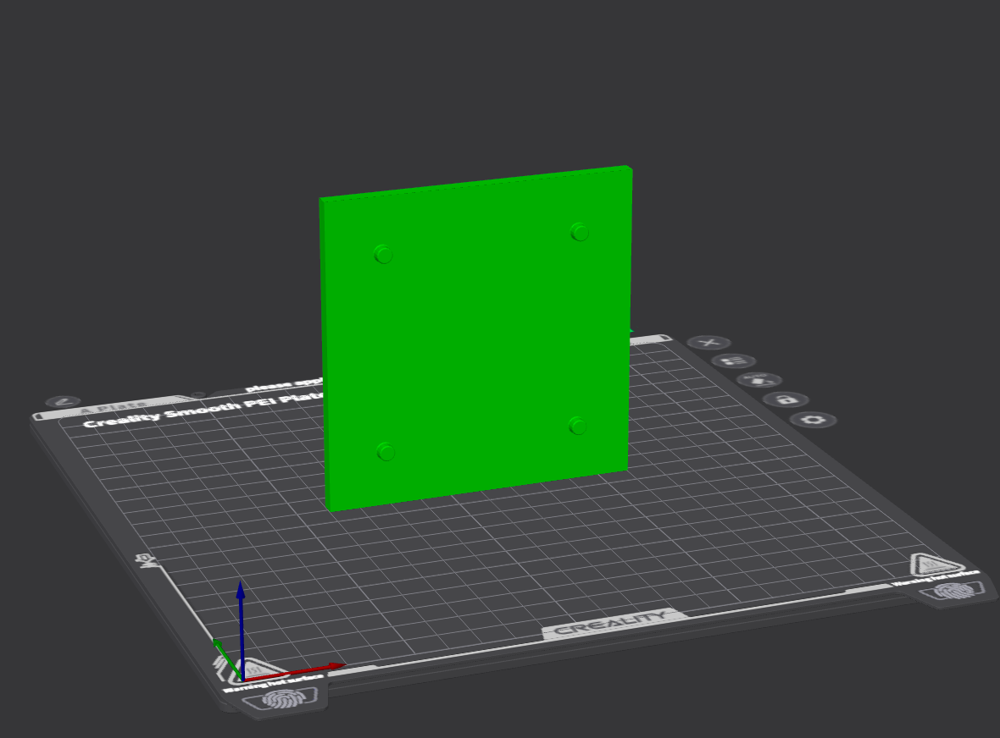
-
smabo-hardware/stl/pan/mg996r/pan_plate_top.stl
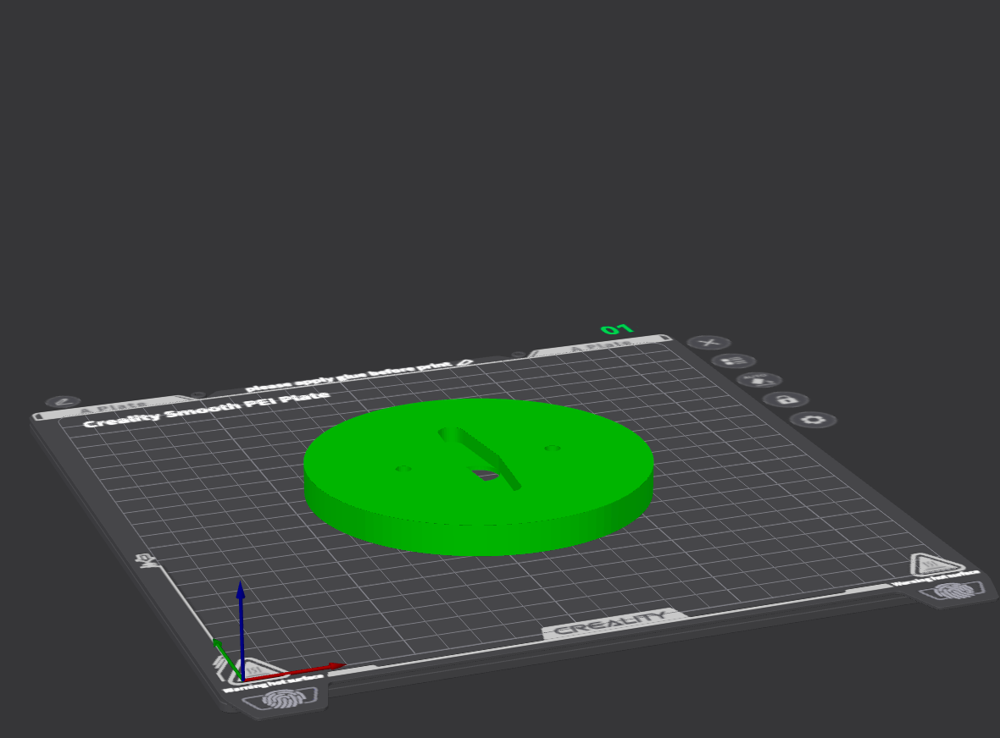
-
smabo-hardware/stl/pan/mg996r/pan_stand_left.stl
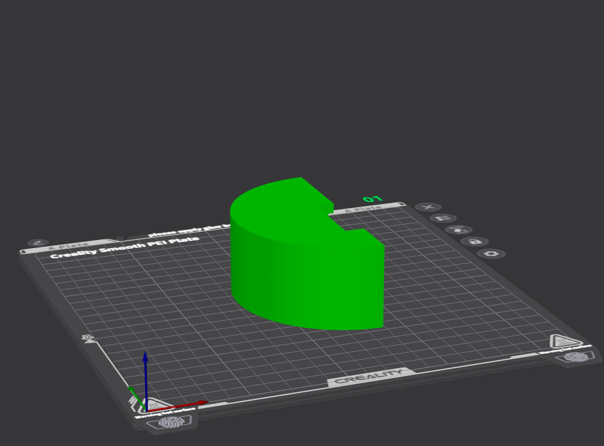
-
smabo-hardware/stl/pan/mg996r/pan_stand_right.stl
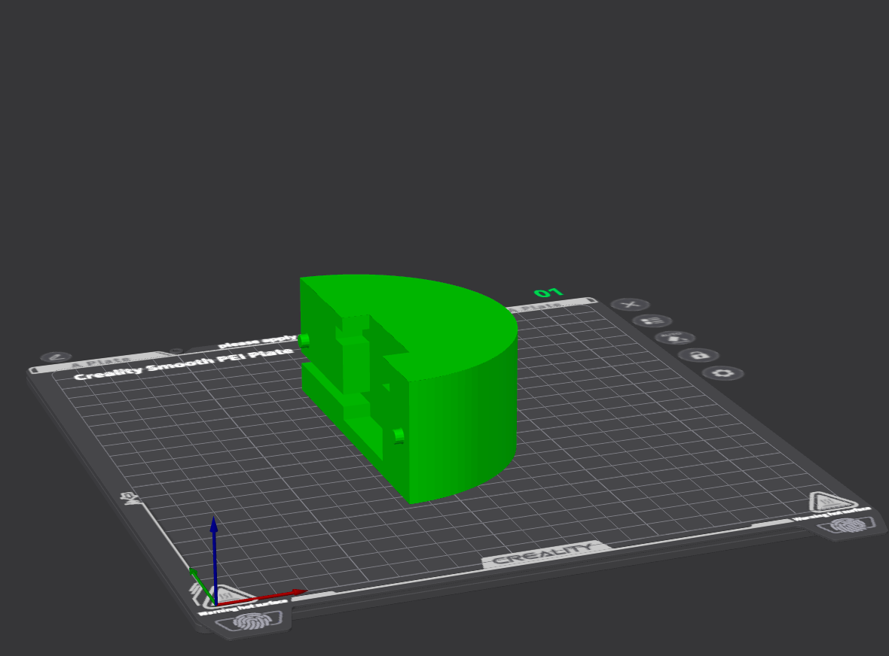
Assembly#
Assemble the required parts as shown in the video below.
Note: the video also includes parts printed in previous steps.
Assembly tips
The assembly video does not show how to attach the MG996R servo, so the steps are described here.
First, fix the MG996R between pan_stand_left and pan_stand_right as shown below.
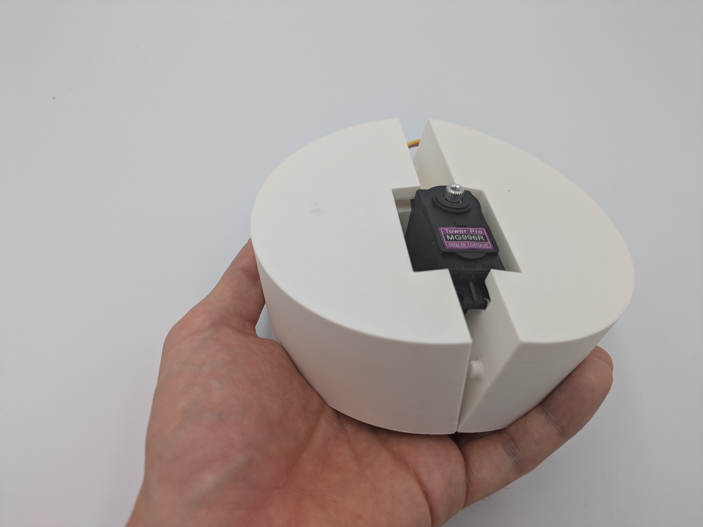
Slide pan_plate_top over from the top and fit the horn in. No tools required, but you may optionally screw the horn to the servo using the included screws.
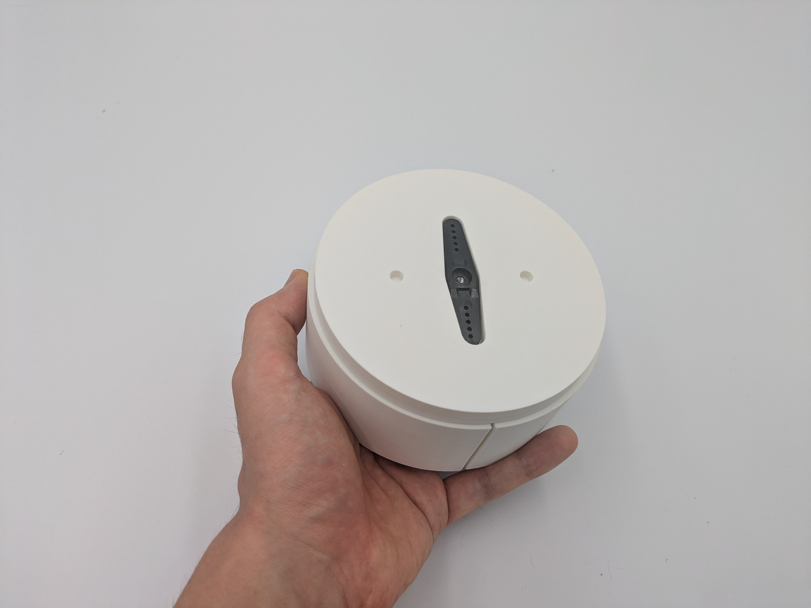
Wiring#
Wire according to the table below.
In the table, "Point A" and "Point B" are directly connected in the circuit.
| Point A | Point B | Notes |
|---|---|---|
| Battery box (+) | Breadboard + rail (right side) | Right rail = 6 V; do not mix with 5 V side |
| Battery box (-) | Breadboard - rail | - |
| ESP32 5 V pin | Breadboard + rail (left side) | Left rail = 5 V; do not mix with 6 V side |
| ESP32 GND | Breadboard - rail | - |
| PCA9685 V++ | Breadboard + rail (right side) | - |
| PCA9685 VCC | Breadboard + rail (left side) | - |
| PCA9685 SDA | Pin set in config.json i2c/sda |
- |
| PCA9685 SCL | Pin set in config.json i2c/scl |
- |
| PCA9685 GND | Breadboard - rail | - |
Wiring diagram for ESP32-DevKitC:
In default config, connect the neck servo to channel=2.
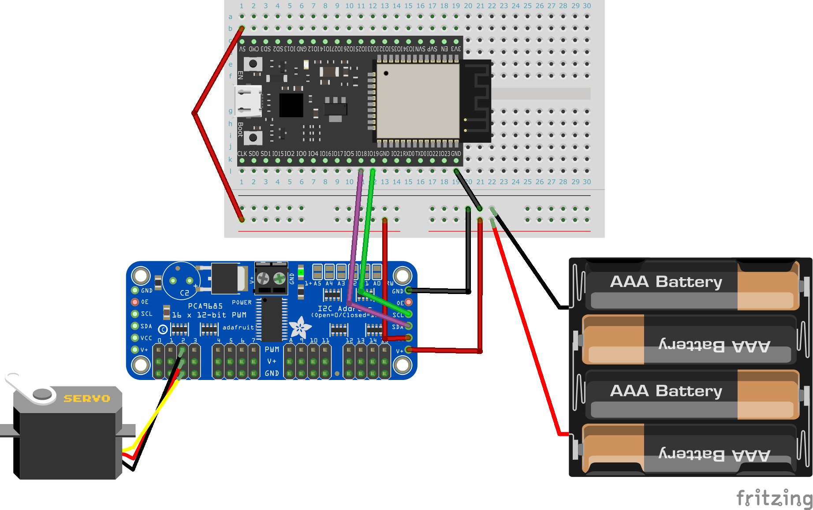
Finished Result#
The completed robot looks like this.
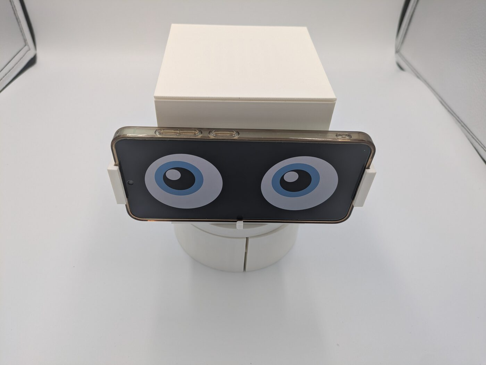
Operation#
Startup Procedure#
Follow the startup procedure here.
Servo Settings#
Servo settings can be changed in the 'Modes/servos' section of the 'Config' tab in smabo-web.
Here, enable:
- 'head_pan'
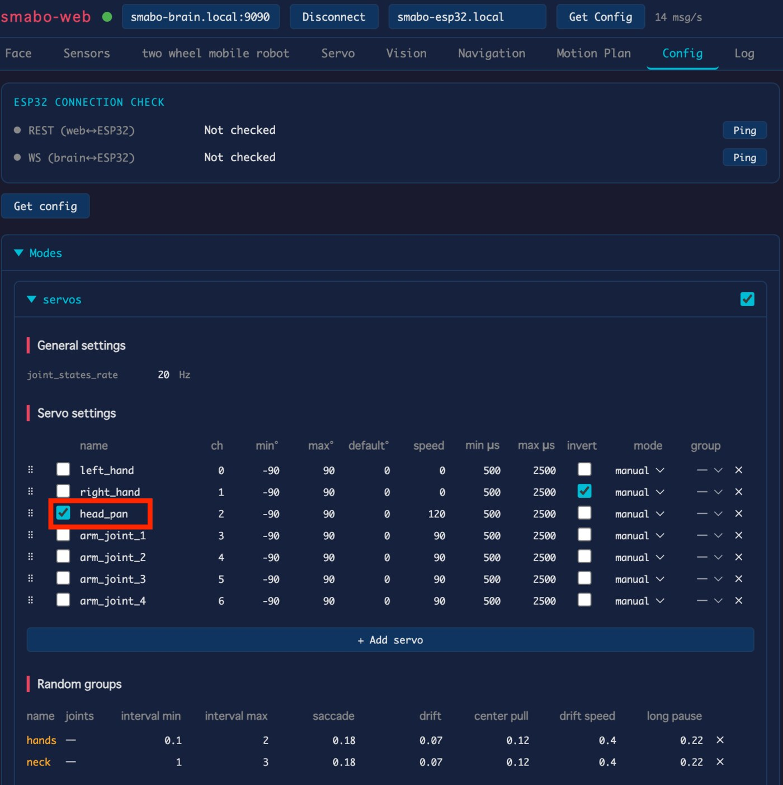
Manual Control#
Steps for manual controller control.
In the 'Config' tab → 'Modes/servos', for head_pan, set:
- 'mode' to 'manual'
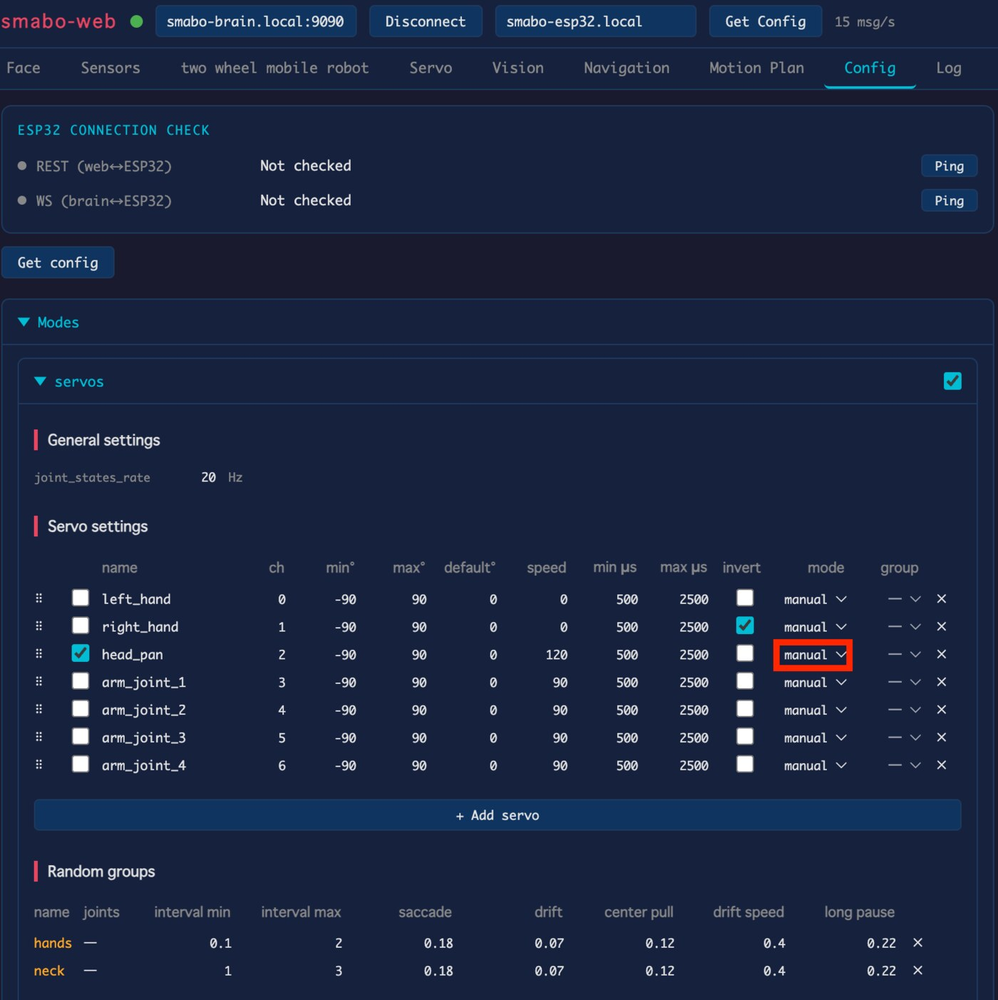
Adjust the servo angle in the 'Servo' tab to rotate smabo left and right.
Random Control#
Steps for random motion control.
In the 'Config' tab → 'Modes/servos', for head_pan, set:
- 'mode' to 'random'
- 'group' to 'neck'
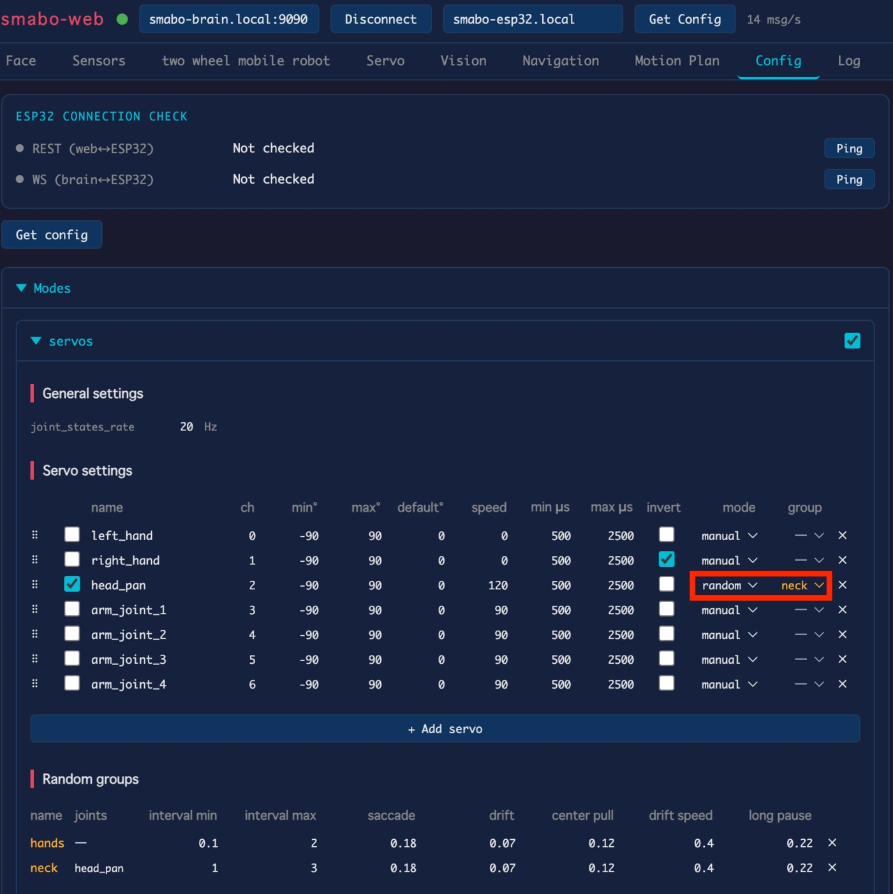
random_group
Servos assigned to the same random_group will move at the same random time.
New random_groups can be added by clicking the "Add random Group" button.

After a moment, smabo will turn left/right at random intervals.
Image-Recognition Control#
Steps for image-recognition-based control.
In the 'Config' tab → 'Modes/servos', set head_pan's:
- 'mode' to 'manual'
In the 'Vision' tab → 'Detection':
- Enable 'Enabled', and
- Select your detection mode (e.g., color mode to track a blue object)

In 'Behaviors':
- Enable 'Servo follow', and set
- 'Pan joint' to 'head_pan'
- 'Pan Direction' to 'reversed(-1)'
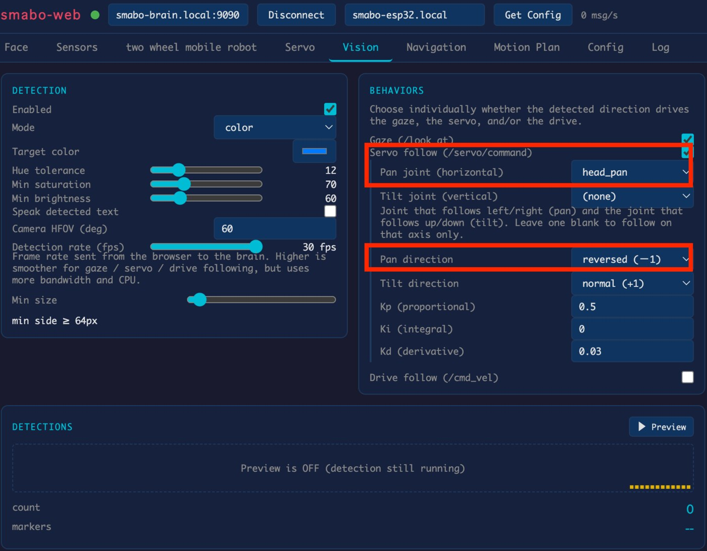
After configuring, place the target object in front of the phone camera. smabo will rotate its head to track the object.
Next#
This is a terminal node on the roadmap.
To explore other features, pick another page from the roadmap.